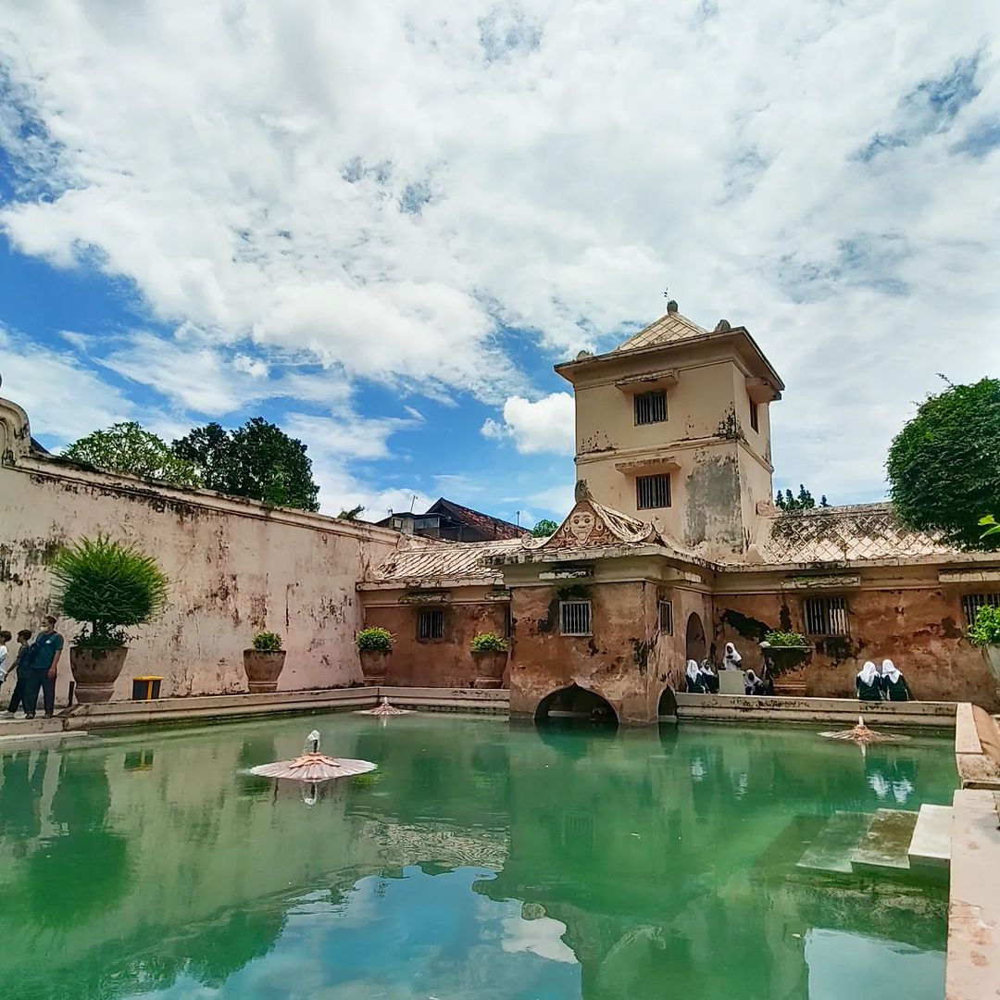
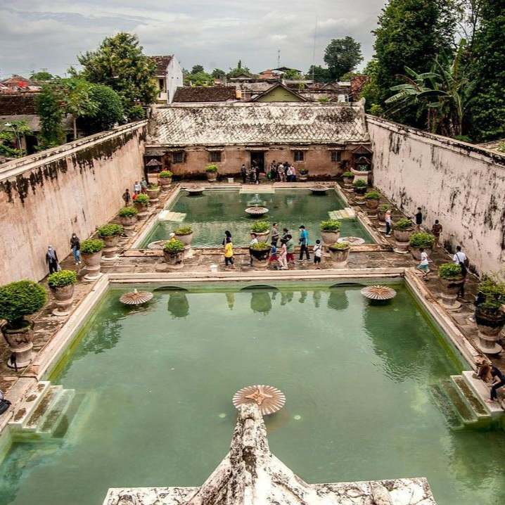

Taman Sari
Lokasi:
Patehan, Kec. Kraton, Kota Yogyakarta, Daerah Istimewa Yogyakarta
Harga Tiket:
Rp5.000/orang
Website:



Tanah Lot
Tanah Lot adalah sebuah tempat wisata yang terletak di Bali, Indonesia. Di sini terdapat sebuah pura yang terletak di atas batu karang yang terpisah dari daratan. Pura ini dikenal sebagai Pura Tanah Lot dan merupakan salah satu pura paling terkenal di Bali. Selain pura, di Tanah Lot juga terdapat beberapa tempat wisata lain seperti pantai yang indah, taman bunga, dan beberapa toko souvenir. Di sini juga terdapat banyak restoran yang menyajikan makanan khas Bali. Tanah Lot merupakan tempat yang sangat populer di kalangan wisatawan yang ingin menikmati keindahan alam dan sejarah Bali.
Fasilitas
- Tempat parkir yang luas
- Toilet bersih
- Banyak tempat makan
- Penjualan souvenir di sekitar wisata